Motivos para você querer visitar a África .
Apesar da África ser conhecida, de modo geral, por sua infraestrutura precária e população pobre, existem bons lugares pelo continente que valem a pena a visita. É o caso da África do Sul, país onde é possível encontrar paisagens maravilhosas, praias encantadoras, muita riqueza cultural e histórica, ótimos hotéis e albergues, restaurantes incríveis e passeios turísticos inesquecíveis.?
Por esses motivos e muitos outros, a África do Sul tem sido cada vez mais procurada por turistas de todo o mundo. Confira abaixo e programe já suas próximas férias nas terras de Mandela!
Belezas naturais encantadoras
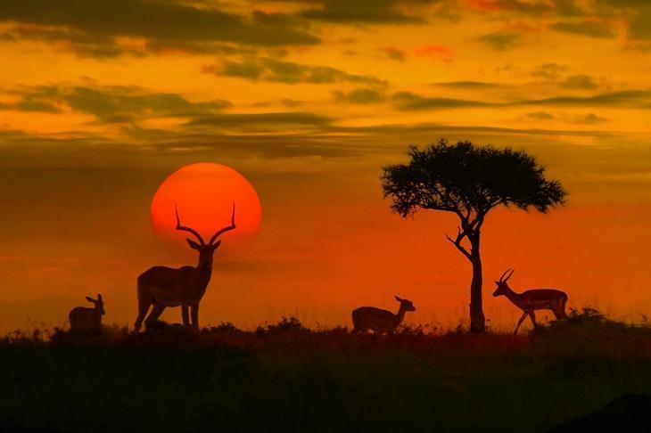Quer admirar paisagens encantadoras? Você está no lugar certo. A África do Sul conta com montanhas, florestas, lagos, cachoeiras, savanas intocadas, cânions, praias e desertos que chegam até a brilhar os olhos de tão lindos..
O local oferece diversas atividades para quem gosta de aventura
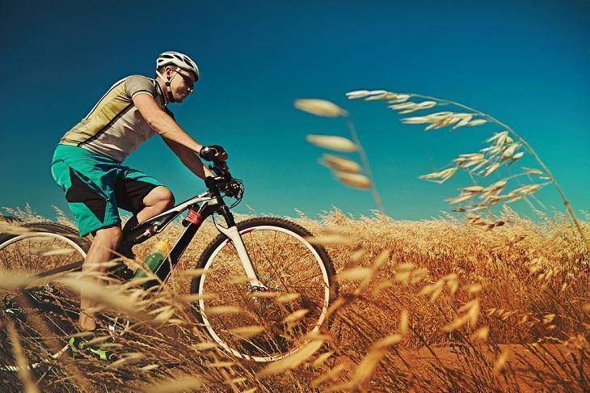Se você gosta de aventuras ou esportes radicais, o país pode ser o seu destino certo, pois é conhecido como o centro da aventura do mundo e conta com mais de 130 atividades variadas, como montanhismo, mergulho em gaiola com tubarões, passeios em balões de ar quente sobre as cordilheiras, bungee jump, tirolesa em florestas, trilhas de bicicleta, canoagem, rapel e muito mais.
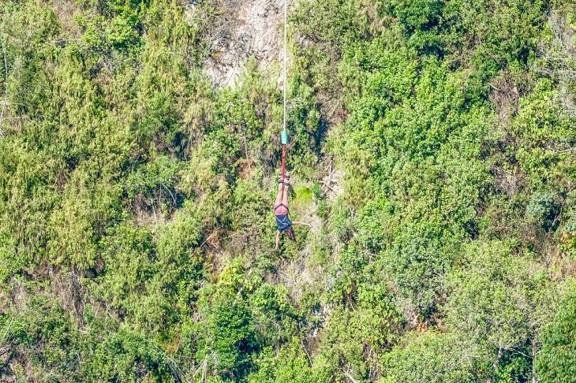
É muito fácil encontrar ótimas acomodações
Um dos setores mais desenvolvidos na África do Sul é o de hotelaria. São diversas opções de hotéis de luxo, com infraestrutura impecável e serviços de primeira qualidade. Porém, se a grana estiver curta, você encontra também muitos hotéis baratinhos, charmosos e confortáveis.
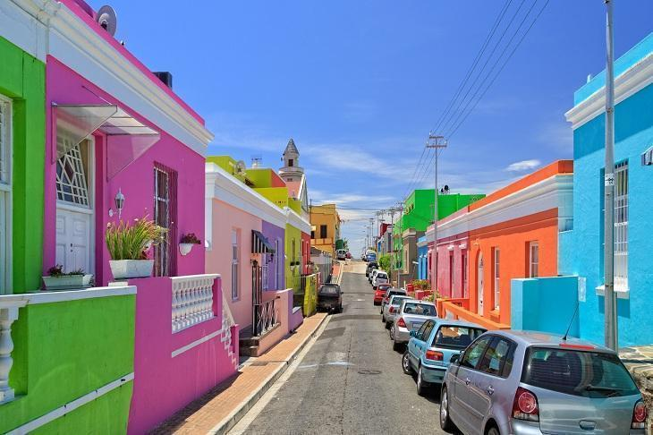A maioria dos albergues, por exemplo, conta com quartos duplos com banheiro e outros são considerados verdadeiros resorts, com opção de chalezinho individual, piscina e até mesmo espaço para churrasqueira.
O clima é excelente o ano inteiro
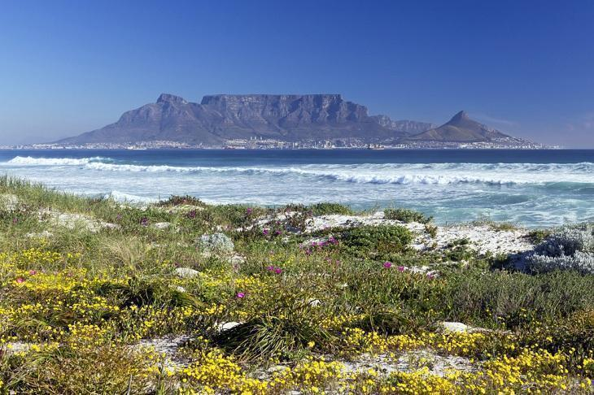O clima da África do sul é perfeito durante todo o ano, já que chove pouco, os verões são ensolarados e os invernos bem amenos, o que permite que você programe a sua viagem de férias em qualquer época do ano.
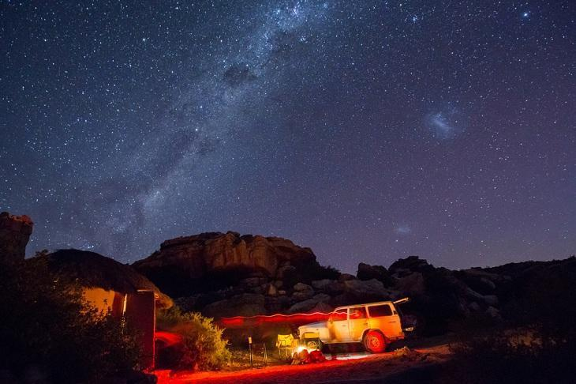
Você poderá interagir com a vida selvagem dos animais
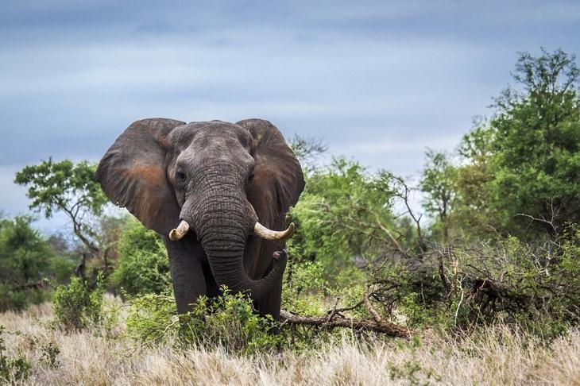Para os amantes dos animais, esse sem dúvidas será o programa preferido de toda a viagem! A África do Sul é sinônimo de safáris e você não pode deixar de conhecer, primeiramente, os famosos e imponentes Big Five – o búfalo, o leão, o elefante, o rinoceronte e o leopardo.
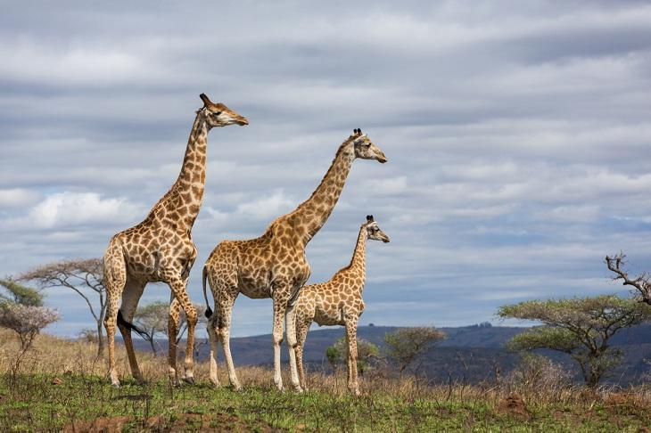Depois, você pode contemplar a vida selvagem e admirar outros animais como pinguins, baleias, suricatos, pássaros e cachorros selvagens, todos vivendo livremente em seus habitats naturais.
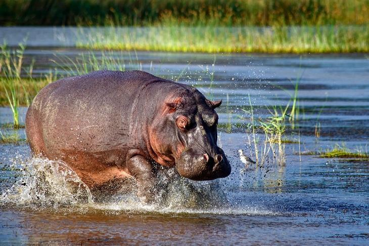São dezenas de parques nacionais e reservas para fazer safáris fotográficos. O Parque Kruger é conhecido como a melhor opção da região.
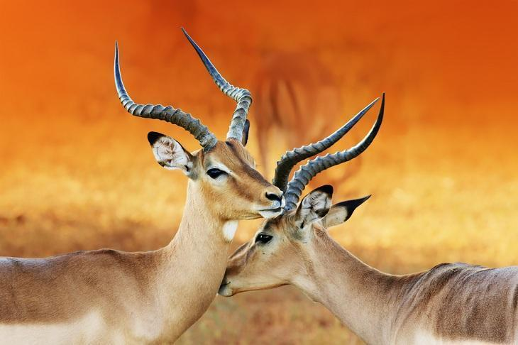
Os passeios turísticos são inesquecíveis
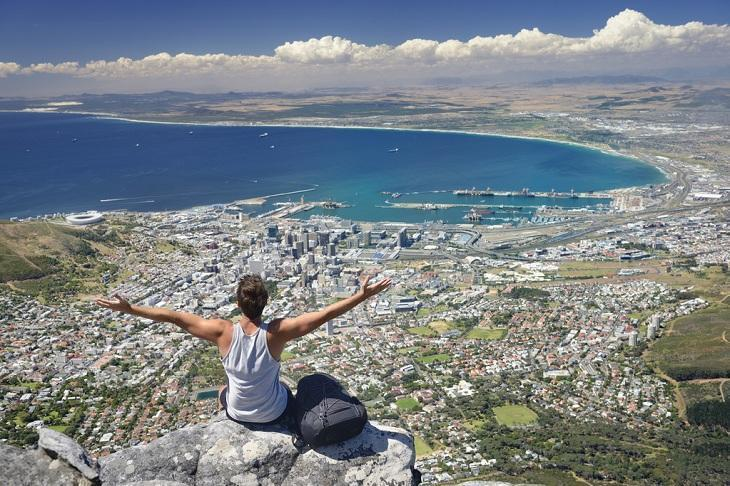Por lá, você pode também fazer passeios turísticos muito bacanas, perfeitos para conhecer melhor a riqueza cultural e histórica do país, que é um dos mais incríveis exemplos de superação, principalmente após um momento que marcou negativamente a história da humanidade: o apartheid, vergonhosa época onde se permitiu que a minoria branca pudesse oprimir a maioria negra e classificar a população por sua raça.
A diversidade do país é muito interessante

Na África do Sul podemos encontrar diversas culturas africanas e imigrantes, o que torna a diversidade do país super interessante, que é também conhecido como Nação Arco Íris. Por lá, o que não falta é uma língua para treinar, já que são 11 idiomas oficiais, entre eles, o inglês.
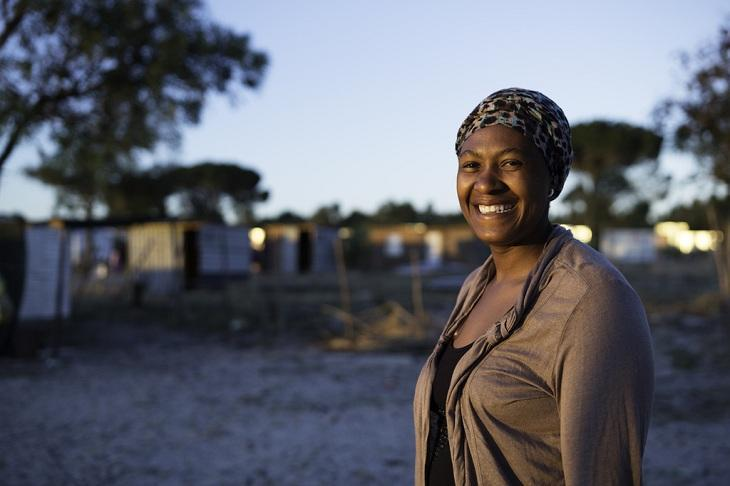Além disso, a população local do sul da África é muito acolhedora, gentil e educada. Basta você cruzar com alguém na rua para receber um belo sorriso!
A gastronomia é simplesmente deliciosa
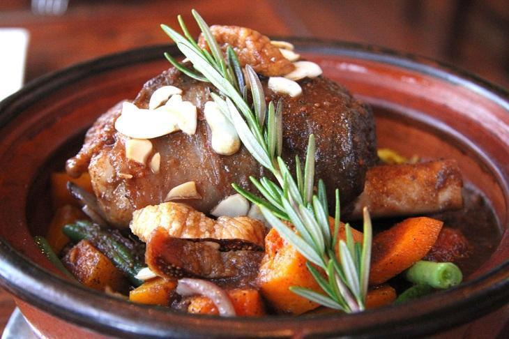Devido às influências das mais variadas culturas, a gastronomia do país ficou bem rica e repleta de sabores. Os pratos são bem fartos e as carnes de diversos tipos, como de gazela, crocodilo, avestruz, antílope e kudu. Já na região costeira, os que mais se destacam são os frutos do mar.
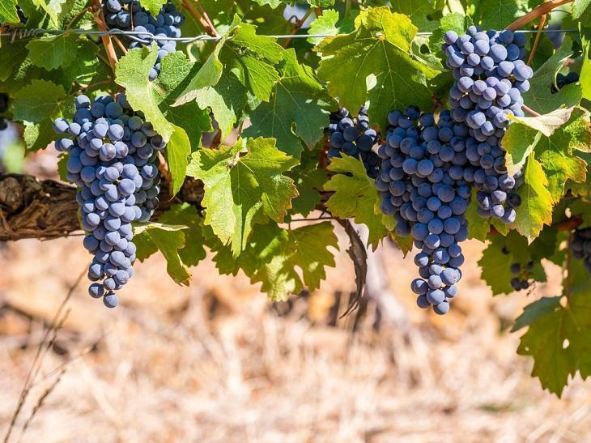Por lá é possível também conhecer mais de 120 vinícolas (os deliciosos vinhos sul-africanos são famosos mundialmente). Assim, você pode comprar uma garrafa muito boa por um preço extremamente acessível. Para quem gosta da bebida, não pode deixar de incluir o programa no roteiro!
É possível conhecer praias paradisíacas
Para quem não dispensa uma boa prainha nas férias, pode relaxar porque a África do Sul conta com mais de 2.798 quilômetros de litoral, onde você irá conhecer algumas das mais belas e paradisíacas do mundo, que além de tudo oferecem um pôr do sol surpreendente. Entre as mais populares, estão a descolada Camps Bay e a Beta Beach.
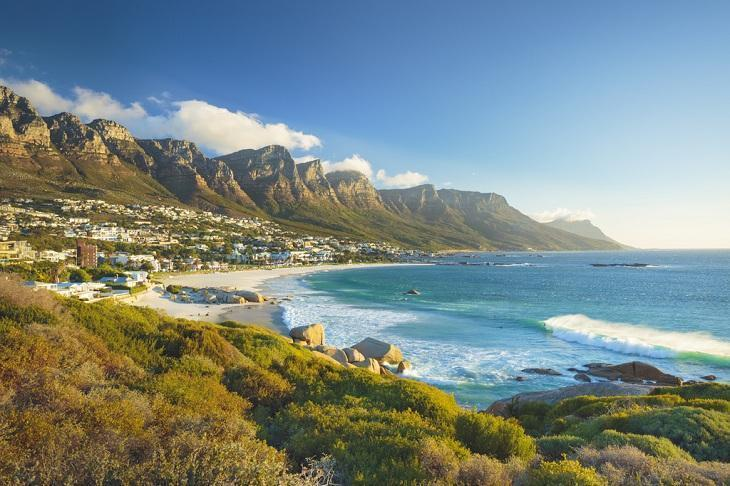
É uma viagem que pode sair bem em conta
Com a alta do dólar e do euro, a África do Sul pode ser uma ótima alternativa para fazer uma viagem mais em conta, já que o rand, moeda corrente oficial do país, sofreu uma forte desvalorização (um real equivale a 4 randes). Dessa forma, os preços mais acessíveis permitem pequenos luxos até mesmo para os turistas mais econômicos.
É um país com baixo risco de malária
Diferente de muitos países, a África do Sul é praticamente 100% livre de malária, pois mesmo nas zonas de risco as chances de contaminação são bem baixas. Portanto, não é necessário você tomar o remédio antes de viajar, o que se torna um gasto a menos, tanto financeiro quanto físico.
E mais: um dos pontos mais favoráveis do país é que por lá você encontra programas para todos os gostos e bolsos, perfeitos para serem feitos em família, com os amigos ou com a pessoa amada
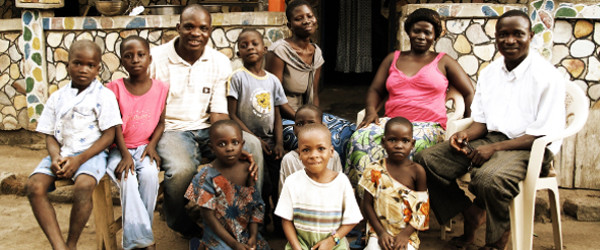Pronto para fazer as malas e visitar a África do Sul ? Tenha a certeza de que você irá vivenciar situações imperdíveis, dessas que não dão para esquecer.
COMENTARIOS
Marcelo DiasQue dms!!! nossa até deu vontade de fazer as malas e sair por ai
Aline machadoAMEIIIIIIIIII